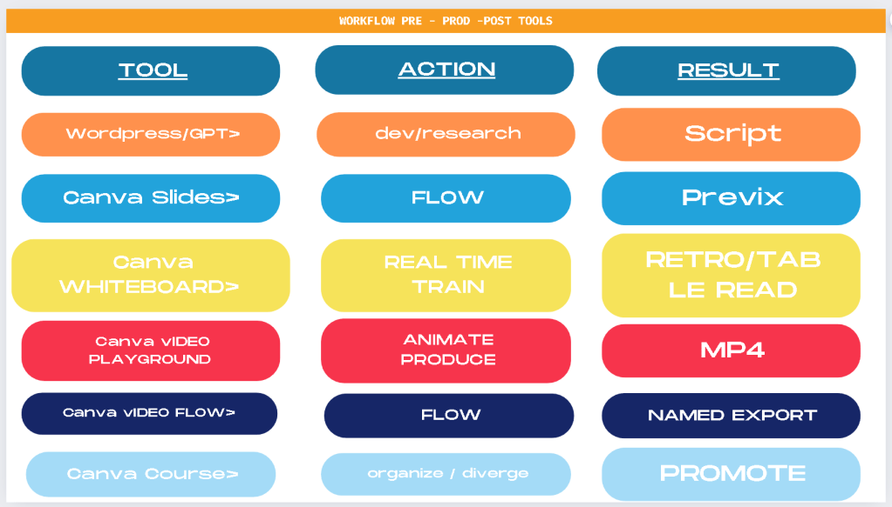

Streamlining Content Creation with Workflow Pre-Prod-Post Tools

Streamlining Content Creation with Workflow Pre-Prod-Post Tools
Creating engaging and high-quality content can be a complex process involving multiple stages, from initial research to final promotion. To streamline this process, a well-defined workflow with appropriate tools is essential. The diagram above presents a comprehensive workflow incorporating various tools at different stages of content creation. Here's a detailed breakdown of each stage and its associated tools, actions, and results:
1. Development and Research
-
Tool: Wordpress/GPT
-
Action: Dev/Research
-
Result: Script
At the initial stage, the focus is on developing ideas and conducting research. Utilizing tools like Wordpress and GPT (Generative Pre-trained Transformer), creators can brainstorm and gather relevant information. The output of this stage is a well-crafted script that forms the foundation for the content.
2. Content Flow and Organization
-
Tool: Canva Slides
-
Action: Flow
-
Result: Previx
Once the script is ready, the next step is to organize the content flow. Canva Slides is an excellent tool for this purpose, allowing creators to structure their ideas visually. This stage results in a "Previx" (pre-visualization) of the content, providing a clear blueprint for the next steps.
3. Real-Time Collaboration and Training
-
Tool: Canva Whiteboard
-
Action: Real-Time Train
-
Result: Retro/Tab Le Read
Collaboration and training are crucial for refining content. Canva Whiteboard facilitates real-time brainstorming and feedback sessions. This collaborative environment ensures that the content is polished and any potential issues are addressed. The outcome is a "Retro/Tab Le Read," a retroactive review and table read to finalize the content before production.
4. Animation and Production
-
Tool: Canva Video Playground
-
Action: Animate Produce
-
Result: MP4
The production stage involves creating the actual content, which can include animations and videos. Canva Video Playground offers robust tools for animating and producing high-quality videos. The result of this stage is an MP4 file, the final video content ready for distribution.
5. Final Flow and Export
-
Tool: Canva Video Flow
-
Action: Flow
-
Result: Named Export
Before the content is distributed, it undergoes a final flow check using Canva Video Flow. This ensures that all elements are seamlessly integrated. The final output is a named export, a properly formatted and ready-to-use video file.
6. Promotion
-
Tool: Canva Course
-
Action: Organize/Diverge
-
Result: Promote
The last stage is promotion. Canva Course helps organize promotional activities and divergent marketing strategies to reach a broader audience. This stage focuses on maximizing the content's visibility and engagement across various platforms.
Conclusion
The workflow outlined above provides a structured approach to content creation, from initial research to final promotion. By leveraging the right tools at each stage, creators can streamline their process, enhance collaboration, and produce high-quality content efficiently. Whether you're a solo creator or part of a team, adopting this workflow can significantly improve your content production and promotional efforts.
Imported from rifaterdemsahin.com · 2024